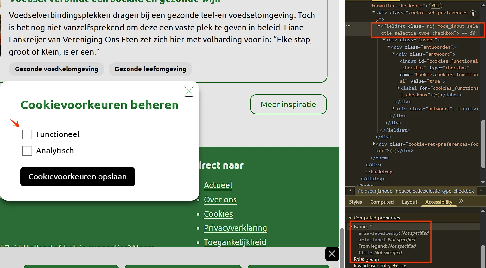
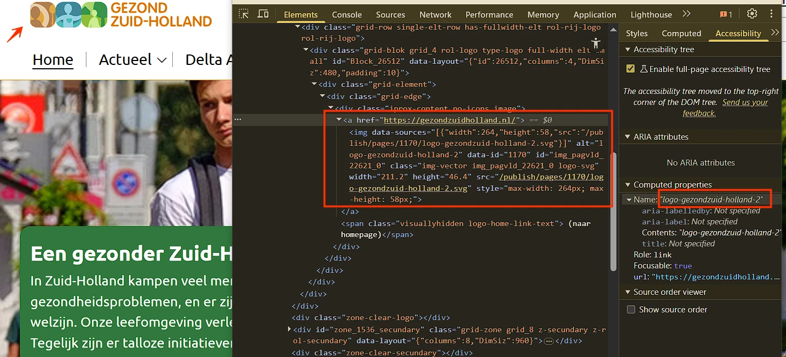

#1 - Groep interactieve elementen heeft geen toegankelijke naam

In de cookiemelding is een groep selectievakjes aanwezig, voorafgegaan door de tekst “Cookievoorkeuren beheren”. Deze groep is netjes geplaatst in een fieldset, maar een legend-element ontbreekt.
Je hebt het legend-element nodig om een label of naam te geven aan de groep keuzerondjes of selectievakjes.
Oplossing:
Voeg een legend-element toe binnen de fieldset en vul het met de tekst “Cookievoorkeuren beheren” (of een meer beschrijvend en toepasselijk label) om duidelijk het doel van de groep aan te geven.
#2 - Toetsenbord focus gaat buiten het dialoogvenster
Toetsenbordfocus in de cookiemelding is niet logisch. Na het doorlopen van alle items in dit dialoogvenster, kan de toetsenbordfocus uit het geopende dialoogvenster ontsnappen en naar de onderliggende pagina gaan.
Bij dit soort dialoogvensters moet je de toetsenbordfocus goed instellen. Als het venster in beeld is, moet de toetsenbordfocus binnen het venster blijven, en mag deze niet op de onderliggende pagina terechtkomen.
Oplossing:
Je lost dit op met Javascript door de focus binnen het venster te houden totdat de bezoeker op de sluitknop heeft geklikt of op de ESC-toets heeft gedrukt.
#3 - Alternatieve tekst bevat onleesbare karakters

Bovenaan de website bevat het logo “GEZOND ZUID-HOLLAND” overbodige tekens in de alternatieve tekst “logo-gezondzuid-holland-2” (streepjes en het cijfer 2). Omdat het logo tevens een link is, wordt de toegankelijke naam van de link afgeleid van deze alternatieve tekst. De huidige alternatieve tekst maakt het doel van de link niet duidelijk.
Oplossing:
Vervang de alternatieve tekst bijvoorbeeld door: “Gezond Zuid-Holland, ga naar de startpagina”.